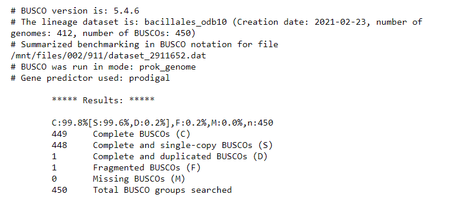
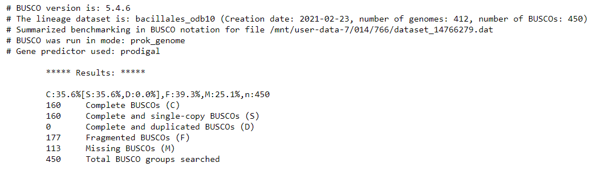
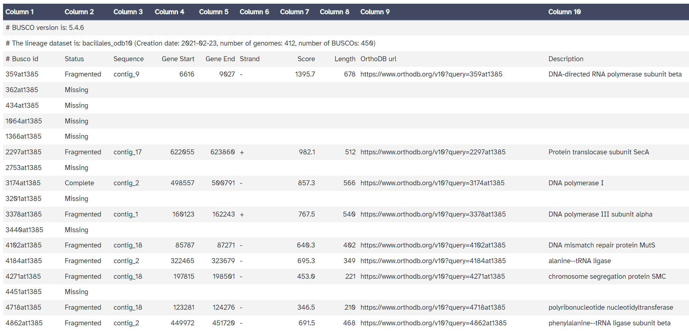
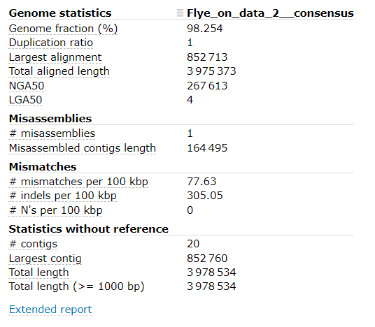
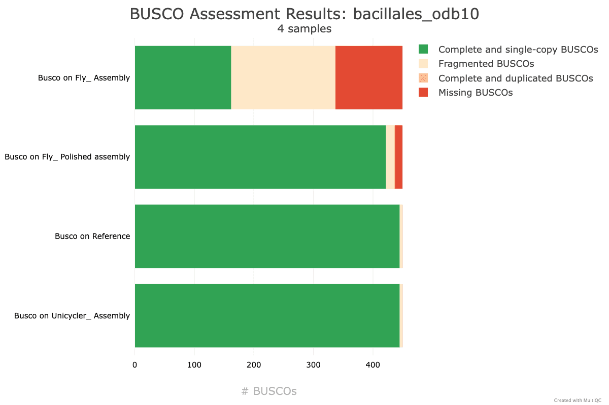
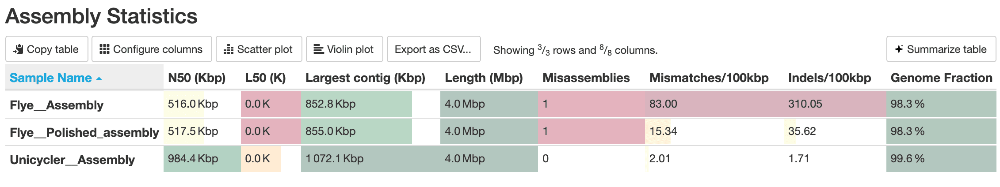
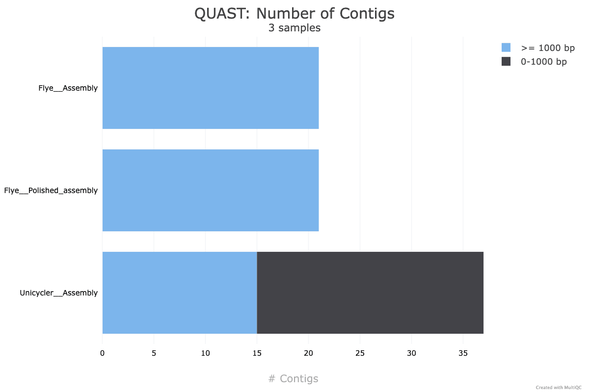

Hybrid genome assembly - Nanopore and Illumina
| Author(s) |
|
| Reviewers |
|
OverviewQuestions:
Objectives:
How do long- and short-read assembly methods differ?
Requirements:
Understand how Nanopore and Illumina reads can be used together to produce a high-quality assembly
Become familiar with genome assembly and polishing programs
Learn how to assess the quality of a genome assembly, regardless of whether a reference genome is present or absent
Be able to assemble an unknown, previously undocumented genome to high-quality using Nanopore and Illumina reads!
Time estimation: 2 hoursSupporting Materials:Published: Nov 3, 2025Last modification: Nov 6, 2025License: Tutorial Content is licensed under Creative Commons Attribution 4.0 International License. The GTN Framework is licensed under MITpurl PURL: https://gxy.io/GTN:T00563version Revision: 2
Assemble a genome! Learn how to create and assess genome assemblies using the powerful combination of Nanopore and Illumina reads.
This tutorial explores how long and short read data can be combined to produce a high-quality ‘finished’ bacterial genome sequence. Termed ‘hybrid assembly’, we will use read data produced from two different sequencing platforms, Illumina (short read) and Oxford Nanopore Technologies (long read), to reconstruct a bacterial genome sequence.
In this tutorial, we will perform ‘de novo assembly’. De novo assembly is the process of assembling a genome from scratch using only the sequenced reads as input - no reference genome is used. This approach is common practise when working with microorganisms, and has seen increasing use for eukaryotes (including humans) in recent times.
Using short read data (Illumina) alone for de novo assembly will produce a complete genome, but in pieces (commonly called a ‘draft genome’). For the genome to be assembled into a single chromosome (plus a sequence for each plasmid), reads would need to be longer than the longest repeated element on the genome (usually ~7,000 base pairs, Note: Illumina reads are 350 base maximum). Draft bacterial genome sequences are cheap to produce (less than AUD$60) and useful (>300,000 draft Salmonella enterica genome sequences published at NCBI https://www.ncbi.nlm.nih.gov/pathogens/organisms/), but sometimes you need a high-quality ‘finished’ bacterial genome sequence. There are <1,000 ‘finished’ or ‘closed’ Salmonella enterica genome sequences.
In these cases, long reads can be used together with short reads to produce a high-quality assembly. Nanopore long reads (commonly >40,000 bases) can fully span repeats, and reveal how all of the genome fragments should be arranged. Long reads currently have higher error rates than short reads, so the combination of technologies is particularly powerful. Long reads provide information on the genome structure, and short reads provide high base-level accuracy.
Combining read data from the long and short read sequencing platforms allows the production of a complete genome sequence with very few sequence errors, but the cost of the read data is about AUD$1,000 to produce the sequence. Understandably, we usually produce a draft genome sequence with very few sequence errors using the Illumina sequencing platform.
Nanopore sequencing technology is rapidly improving, expect the cost difference to reduce!!
- Data: Nanopore reads, Illumina reads, bacterial organism (Bacillus subtilis) reference genome
- Tools: Flye, Pilon, Unicycler, Quast, Busco
- Pipeline: Hybrid de novo genome assembly - Nanopore draft Illumina polishing
- Pipeline: Hybrid de novo genome assembly - Unicycler
This Galaxy tutorial based on material from the Hybrid genome assembly - Nanopore and Illumina tutorial and workshop created by Melbourne Bioinformatics at the University of Melbourne.
AgendaIn this tutorial we will deal with:
Background
How do we produce the genomic DNA for a bacterial isolate?
Traditional in vitro culture techniques are important. Take a sample (e.g. a swab specimen from an infected sore) and streak a ‘loopful’ on to solid growth medium that suppoprts the growth of the bacteria. Technology from the time of Louis Pasteur!
Mixtures of bacterial types can be sequenced e.g. prepare genomic DNA from environmental samples containing bacteria - water, soil, faecal samples etc. (Whole Metagenome Sequencing)
One colony contains \(10^7 – 10^8\) cells. The genomic DNA extracted from one colony is enough for Illumina sequencing. Larger amounts of genomic DNA are required for Nanopore sequencing.
Shotgun sequencing - Illumina Sequencing Library
Genomic DNA is prepared for sequencing by fragmenting/shearing: multiple copies of Chromosome + plasmid –> ~500 bp fragments
Note: Nanopore sequencing - there is usually no need to shear the genomic DNA as specialist methods are used to minimise shearing during DNA preparation. For Nanopore sequencing, the longer the DNA fragments, the better!
Nanopore draft assembly, Illumina polishing
In this section, you will use Flye to create a draft genome assembly from Nanopore reads. We will perform assembly, then assess the quality of our assembly using two tools: Quast and Busco.
Upload data
Let’s start with uploading the data.
Hands On: Import the data
Create a new history for this tutorial and give it a proper name
To create a new history simply click the new-history icon at the top of the history panel:
- Click on galaxy-pencil (Edit) next to the history name (which by default is “Unnamed history”)
- Type the new name
- Click on Save
- To cancel renaming, click the galaxy-undo “Cancel” button
If you do not have the galaxy-pencil (Edit) next to the history name (which can be the case if you are using an older version of Galaxy) do the following:
- Click on Unnamed history (or the current name of the history) (Click to rename history) at the top of your history panel
- Type the new name
- Press Enter
Import from Zenodo:
- FASTQ file with illumina forward reads:
illumina_reads_1.fastq- FASTQ file with illumina reverse reads:
illumina_reads_2.fastq- FASTQ file with nanopore reads:
nanopore_reads.fastq- FASTA file with reference genome:
reference_genome.fastahttps://zenodo.org/records/15756328/files/illumina_reads_1.fastq https://zenodo.org/records/15756328/files/illumina_reads_2.fastq https://zenodo.org/records/15756328/files/nanopore_reads.fastq https://zenodo.org/records/15756328/files/reference_genome.fasta
- Copy the link location
Click galaxy-upload Upload at the top of the activity panel
- Select galaxy-wf-edit Paste/Fetch Data
Paste the link(s) into the text field
Press Start
- Close the window
As an alternative to uploading the data from a URL or your computer, the files may also have been made available from a shared data library:
- Go into Libraries (left panel)
- Navigate to the correct folder as indicated by your instructor.
- On most Galaxies tutorial data will be provided in a folder named GTN - Material –> Topic Name -> Tutorial Name.
- Select the desired files
- Click on Add to History galaxy-dropdown near the top and select as Datasets from the dropdown menu
In the pop-up window, choose
- “Select history”: the history you want to import the data to (or create a new one)
- Click on Import

A baseline for “high-quality” assemblies
To begin, we will identify what a high-quality assembly looks like.
When running assembly tools, we want to check the quality of assemblies we produce.
It is paramount that genome assemblies are high-quality for them to be useful. To get a baseline for what is considered a “high-quality” assembly, we will first run a common assembly QC tool - Busco - on a published genome similar to the organism we are working with today.
In your imported files, you should see a reference_genome.fasta item.
This is the published genome we will compare against.
QC with Busco
BUSCO analysis uses the presence, absence, or fragmentation of key genes in an assembly to determine its quality.
BUSCO genes are specifically selected for each taxonomic clade, and represent a group of genes that each organism in the clade is expected to possess. At higher clades, ‘housekeeping genes’ are the only members, while at more refined taxa such as order or family, lineage-specific genes can also be used.
We expect the reference genome to have all of these genes. When running Busco, we expect it to find most (if not all) of these in the assembly.
Find and select the Busco tool in the tools panel using the search bar.
In this tutorial, we know our organism is within the ‘Bacillales’ order.
Hands On: Run Busco
- Busco ( Galaxy version 5.8.0+galaxy1):
- “Sequences to analyse”:
reference_genome.fasta- “Mode”:
- “Select a gene predictor”:
Augustus- “Auto-detect or select lineage?”:
Select lineage
- “Lineage”:
Bacillales- “Which outputs should be generated”:
Short summary textRename the
short summaryoutput toBusco on Reference.- View the
Busco on Referenceoutput:
- It may look something like this:

QuestionWhat can you conclude from the BUSCO report?
- It seems that
Buscocould find almost all expected genes in the reference genome assembly.- By looking at the results, we see that we have 449 / 450 Complete BUSCOs, and one Fragmented BUSCO.
- This will form the baseline for the
BuscoQC results expected of a high-quality genome assembly.- From here, we will use our input DNA sequence data to assemble the genome of the sequenced organism, and will compare the QC results to that of the published
reference_genome.fastaassembly.
Draft assembly with Flye + Nanopore reads
Our first assembly will use the long-read data to create a draft genome, then the short-read data to “polish” (improve) the draft into a better assembly.
We will start by using a long-read assembly tool called Flye to create an assembly using the Nanopore long-read data.
Search for Flye in the tools panel search bar and select the tool.
Hands On: Run Flye
- Flye ( Galaxy version 2.9.6+galaxy0):
- “Input reads”:
nanopore_reads.fastq- Leave all other parameters as default
- Scroll down and run Flye by clicking the blue
Run toolbutton at the bottom of the page.- View output:
Flyeproduces a number of outputs. We only need the ‘consensus’ fasta file. You can delete the other outputs.- Rename the
Flye on data XX: consensusoutput toFlye: Assembly
Assessing the Flye draft assembly quality
Busco
We need to check if our assembly is good quality or not. It is paramount that genome assemblies are high-quality for them to be useful.
Hands On: Run Busco
- Busco ( Galaxy version 5.8.0+galaxy1):
- “Sequences to analyse”:
Flye: Assembly- “Mode”:
- “Select a gene predictor”:
Augustus- “Auto-detect or select lineage?”:
Select lineage
- “Lineage”:
Bacillales- “Which outputs should be generated”:
Short summary textRename the
short summaryoutput toBusco on Flye: Assembly.- View the
Busco on Flye: Assemblyoutput:
- It may look something like this:

- The
full tableis also useful. It gives a detailed list of the genes we are searching for, and information about whether they were missing, fragmented, or complete in our assembly.
QuestionHow does this compare with the reference genome BUSCO report?
We see that many genes are fragmented or missing. Our draft genome assembly isn’t as good as the reference genome yet. This is because we have so far only used the Nanopore long-read sequences, which have higher base-level error rates than short reads. In the next steps we will use Illumina short reads to correct for errors in the assembled Nanopore reads.
Quast
Aside from Busco, we can use another method to perform assembly QC. Quast allows us to compare two assemblies to determine their similarity.
Although the organism we sequenced may be different, we can use Quast to compare our assembly with the provided reference genome to see how similar they are on the individual base level.
Search for the Quast tool in the tools panel.
Hands On: Run Quast
- Quast ( Galaxy version 5.3.0+galaxy0):
- “Assembly mode”:
Individual assembly- “Use customized names for the input files?”:
No, use dataset names- “Contigs/scaffolds file”:
Flye: Assembly- “Type of assembly?”:
Genome- “Use a reference genome?”:
Yes
- “Reference genome”:
reference_genome.fasta- “Output files”: Select
HTML reports,Tabular reportsRename the
tabular reportoutput toQuast on Flye: Assembly.- View output:
Quastwill produce a HTML report summarising it’s results.- Open the report. It may look something like this:

- Note the:
- Genome fraction (%)
- # mismatches per 100 kbp
- # indels per 100 kbp
- # contigs information
QuestionWhat can you conclude about our draft assembly?
- From the output of
Quast, our draft assembly seems to have good coverage and not too many contigs.- Unfortunately, the mismatch / indel rate is quite high.
- Although we don’t expect our organism to be identical to the supplied reference, we would expect fewer mismatches and indels, as the provided reference genome is very similar to organism which was sequenced.
Assembly Polishing with Pilon
We should be able improve our draft assembly with the Illumina reads available and correct some of these errors.
This process involves two steps. We will first align the Illumina reads to our draft assembly, then supply the mapping information to Pilon, which will use this alignment information to error-correct our assembly.
Illumina reads have much higher per-base accuracy than Nanopore reads. We will map the Illumina reads to our draft assembly using a short-read aligner called BWA-MEM. Then we can give Pilon this alignment file to polish our draft assembly.
Map Illumina reads to draft assembly
Search for Map with BWA-MEM in the tools panel.
Hands On: Map with BWA-MEM
- Map with BWA-MEM ( Galaxy version 0.7.19):
- “Will you select a reference genome from your history or use a built-in index?”:
Use a genome from history and build index- “Use the following dataset as the reference sequence”:
Flye: Assembly- “Single or Paired-end reads”:
Paired- “Select first set of reads”:
illumina_reads_1.fastq- “Select second set of reads”:
illumina_reads_2.fastq- View output:
- The output will be a BAM file (Binary Alignment Map). This is tabular data recording information about how reads were aligned to the draft assembly.
- We can now use this output BAM file as an input to
Pilon.- Rename the output to
Flye: Short read alignments
Polish assembly with Pilon
Search for Pilon in the tools panel.
Hands On: Run Pilon
- Pilon ( Galaxy version 1.20.1):
- “Source for reference genome used for BAM alignments”:
Use a genome from History
- “Select a reference genome”:
Flye: Assembly- “Type automatically determined by pilon”:
- “Input BAM file”:
Flye: Short read alignments- “Variant calling mode”:
No- View output:
Pilongives a single output file - the polished assembly.- Rename the output to
Flye: Polished assembly
Compare draft and polished assemblies
We are now interested to see how much Pilon improved our draft assembly.
Hands On: Run QuastRun
Quastas before with the newFlye: Polished assemblydata
Select the history item for our initial
Quastjob, then click the rerun dataset-rerun button. This will load the settings used for the previousQuastjob.Change the “Contigs/scaffolds file” input to
Flye: Polished assembly.Click the
Run Toolbutton to submit the job.Rename the
tabular reportoutput toQuast on Flye: Polished assembly.After
Quasthas finished, open the HTML report.
- Make note of
# mismatches per 100 kbpand# indels per 100 kbp.
QuestionHas our assembly improved?
Yes, we now have lower mismatches and indels per 100kbp.
Hands On: Run BuscoRun
Buscoas before with the newFlye: Polished assemblydata
Select the history item for our initial
Buscojob, then click the rerun dataset-rerun button. This will load the settings used for the previousBuscojob.Change the “Sequences to analyse” input to
Flye: Polished assembly.Click the
Run Toolbutton to submit the job.Rename the
short summaryoutput toBusco on Flye: Polished assembly.After
Buscohas finished, open theBusco on Flye: Polished assemblyoutput.
QuestionHave we identified more expected genes?
Yes, we now identified 423 complete BUSCO genes.
Section Summary
All going well, the polished assembly should be much higher quality than our draft.
The per-base accuracy of our assembly contigs should have markedly improved. This is reflected in the lower mismatches and indels per 100kbp reported by Quast, and the higher number of complete BUSCO genes. Our contiguity and coverage (as measured by the genome fraction (%) statistic reported by Quast) may not show the same level of improvement, as the polishing step is mainly aimed at improving per-base contig accuracy.
Our next step is to use a purpose-built hybrid de novo assembly tool, and compare its performance with our sequential draft + polishing approach.
Section Questions
QuestionWhich read set - short or long - was used to create our draft?
Long reads (Nanopore) were used to create the draft. Long reads allow excellent re-creation of the proper structure of the genome, and adequately handle repeat regions. The drawback of long reads is a higher error rate of the technology compared to short reads. This results in more mismatches and indels.
QuestionHow was the draft polished?
Illumina reads have higher per-base accuracy than Nanopore. Illumina reads were aligned to the draft assembly, then
Pilonused this alignment information to improve locations with errors in the assembly.
QuestionHow does
Quastinform on assembly quality?
Quastshows summary information about the assembly contigs. If a reference genome is given, it informs the genome fraction (how much of the reference is covered by the assembly), if any genomic regions appear duplicated, and error information including the rate of mismatches and indels.
QuestionHow does
Buscoinform on assembly quality?
Buscodoes not use a reference genome to compare. It attempts to locate key genes which should be present in the assembly, and reports whether it could/could not find those genes. If a key gene is found, it reports whether the gene was fragmented (errors) or complete.
Purpose-built hybrid assembly tool - Unicycler
In this section, we will use a purpose-built tool called Unicycler to perform hybrid assembly.
Unicycler uses our Nanopore and Illumina read sets together as input, and returns an assembly. Once we have created the assembly, we will assess its quality using Quast and Busco and compare with our previous polished assembly. We will also perform BUSCO analysis on the supplied reference genome itself, to record a baseline for our theoretical best Busco report.
Hybrid de novo assembly with Unicycler
Unicycler performs assembly in the opposite manner to our previous approach. Illumina reads are used to create an assembly graph, then Nanopore reads are used to disentangle problems in the graph. The Nanopore reads serve to bridge Illumina contigs, and to reveal how the contigs are arranged sequentially in the genome.
Run Unicycler
Find Unicycler in the tools panel. It is listed as Create assemblies with Unicycler
Run Unicycler using the Nanopore and Illumina read sets.
Hands On: Run Unicycler
- Unicycler ( Galaxy version 0.5.1+galaxy0):
- “Paired or Single end data?”:
Paired- “Select first set of reads”:
illumina_reads_1.fastq- “Select second set of reads”:
illumina_reads_2.fastq- “Select long reads. If there are no long reads, leave this empty”:
nanopore_reads.fastq- View Output
Unicyclerwill output three files
- The assembly
- An assembly graph
- SPAdes graphs
- We are interested in the
Final Assemblyoutput, which is the assembly as afastafile.- Rename the
Final Assemblyoutput toUnicycler: Assembly.CommentIf
nanopore_reads.fastqdoes not appear in the dropdown list, its datatype needs to be changed.
- Click the pencil galaxy-pencil icon next to
nanopore_reads.fastqin the history panel.- Then select the
Datatypestab.- For the parameter
New Type:fastqsanger- Leave all else default and execute the program.
Comparing Unicycler assembly to Nanopore + Illumina polished assembly
Busco and Quast can be used again to assess our Unicycler assembly. As a purpose-built tool, it generally produces much better assemblies than our sequential approach. This is reflected as (Quast) a lower number of contigs, lower mismatches and indels per 100kb, and (Busco) greater number of BUSCO genes complete.
Hands On: Run QuastRun
Quastas before with the newUnicycler: Assemblydata
Select the history item for our initial
Quastjob, then click the rerun dataset-rerun button. This will load the settings used for the previousQuastjob.Change the “Contigs/scaffolds file” input to
Unicycler: Assembly.Click the
Run Toolbutton to submit the job.Rename the
tabular reportoutput toQuast on Unicycler: Assembly.At time of writing, these were the
Quastresults:
Hands On: Run BuscoRun
Buscoas before with the newUnicycler: Assemblydata
Select the history item for our initial
Buscojob, then click the rerun dataset-rerun button. This will load the settings used for the previousBuscojob.Change the “Sequences to analyse” input to
Unicycler: Assembly.Click the
Run Toolbutton to submit the job.Rename the
short summaryoutput toBusco on Unicycler: Assembly.At time of writing, these were the
Buscoresults:
We can now create an aggregate summary report from all of our Quast and Busco outputs using MultiQC, which enables us to easily compare the quality of our genome assemblies.
Hands On: Run MultiQC
- MultiQC ( Galaxy version 1.27+galaxy4):
- “1: Results”:
- “Which tool was used generate logs?”:
BUSCO- “Output of BUSCO”:
Busco on Reference,Busco on Fly: Assembly,Busco on Fly: Polished assembly,Busco on Unicycler: Assembly,- Click
+ Insert Resultsto add a second results field- “2: Results”:
- “Which tool was used generate logs?”:
QUAST- “Output of Quast”:
Quast on Fly: Assembly,Quast on Fly: Polished assembly,Quast on Unicycler: Assembly- View the
Webpageoutput fromMultiQC:
- At time of writing, these were the results.
- The number of BUSCOs identified in each assembly by
Busco:
- A table of
Quaststatistics for each assembly:
- The number of contigs identified in each assembly by
Quast:
QuestionHow does the
Unicyclerassembly compare with the previous assembly produced usingFlye+Pilon?It seems that the
Unicyclerassembly is much better than theFlye+Pilonpolishing assembly, and produces the same report as the reference genome. Awesome! Looks like this is pretty good.The
Unicyclerassembly has:
- A very high Genome fraction (coverage of the reference genome)
- Very few mismatches and indels per 100 kbp
- 15 contigs (compared with the reference genome only having 1 contig)
These results indicate that our Unicycler assembly is high quality, and the organism is extremely similar to the organism of the reference genome.
To improve our assembly further to be publishable “complete” quality, we would want to reduce the number of contigs (ideally to a single contig). If the organism has plasmids, we would expect a handfull of contigs, likely below 10.
To do this, the best course of action would be to generate more long-read data.
Section Questions
QuestionWhy did we select
Pairedfor our Illumina reads in theUnicyclertool?Our short read set was
paired-end. Short read technology can only sequence a few hundred base-pairs in a single read. To provide better structural information, paired-end sequencing was created, where longer fragments (fixed length) are used. A few hundred bp is sequenced at both ends of the fragment, leaving the middle section unsequenced. The reads produced (the mate-pair) from a single fragment are separated by a fixed length, so we know they are nearby in the genome.
QuestionDoes
Unicyclerbegin by using the long or short reads?Unicycler uses short reads first. It creates an assembly graph from short reads, then uses the long reads to provide better structural information of the genome.
QuestionHow does
Unicycleruse long reads to improve its assembly graph?The assembly graph produced by short reads has tangled regions. When we don’t know how sections of the genome are arranged, tangled regions appear in the graph.
Unicycleruses Nanopore reads which overlap these tangled regions to resolve the proper structure of the genome.
Conclusion
We have covered two methods for hybrid de novo assembly. The combination of long- and short-read technology is clearly powerful, represented by our ability to create a good assembly with only 25x coverage (100Mb) of Nanopore and 50x coverage (200Mb) of Illumina reads.
To further improve our assembly, extra Nanopore read data may provide the most benefit. At 50x coverage (200Mb), we may achieve a single, or few contig assembly with high per-base accuracy.
In this tutorial, we had a reference genome for a closely related organism, which we could use when assessing the quality of our draft genome assemblies. Without access to a reference genome, Quast will produce fewer metrics for assessing the assembled genome quality. In this situation, you can look at the number of contigs in the assembled genome, the minimum number of contigs that produce 50\% and 90\% of the bases in the assembly and the GC\% content. For good quality assemblies, the total and minimum number (50\% and 90\%) of contigs should be small and the GC\% content should be near 50\%.
The development of new purpose-built tools for hybrid de novo assembly like Unicycler have improved the quality of assemblies we can produce. These tools are of great importance and while they already produce great results, they will continue to improve over time.
Additional reading
Links to additional recommended reading and suggestions for related tutorials.
- Flye: https://github.com/fenderglass/Flye/blob/flye/docs/USAGE.md#algorithm
- Pilon: https://github.com/broadinstitute/pilon/wiki/Methods-of-Operation
- Unicycler: https://github.com/rrwick/Unicycler
- Quast: https://academic.oup.com/bioinformatics/article/29/8/1072/228832
- BUSCO analysis: https://academic.oup.com/bioinformatics/article/31/19/3210/211866
You've Finished the Tutorial
Key points
Performing de novo genome assembly with a combination of long and short reads results in a high quality genome
There are multiple methods for performing hybrid de novo assembly
One option is to assemble the long reads using
Flyeand then polish with the short reads usingPilonAlternatively,
Unicyclercreates an assembly graph from the short reads and then untangles the graph with the long reads
Frequently Asked Questions
Have questions about this tutorial? Have a look at the available FAQ pages and support channelsFeedback
Did you use this material as an instructor? Feel free to give us feedback on how it went.
Did you use this material as a learner or student? Click the form below to leave feedback.

Citing this Tutorial
- Grace Hall, Tristan Reynolds, Hybrid genome assembly - Nanopore and Illumina (Galaxy Training Materials). https://training.galaxyproject.org/training-material/topics/assembly/tutorials/hybrid_denovo_assembly/tutorial.html Online; accessed TODAY
- Hiltemann, Saskia, Rasche, Helena et al., 2023 Galaxy Training: A Powerful Framework for Teaching! PLOS Computational Biology 10.1371/journal.pcbi.1010752
- Batut et al., 2018 Community-Driven Data Analysis Training for Biology Cell Systems 10.1016/j.cels.2018.05.012
@misc{assembly-hybrid_denovo_assembly, author = "Grace Hall and Tristan Reynolds", title = "Hybrid genome assembly - Nanopore and Illumina (Galaxy Training Materials)", year = "", month = "", day = "", url = "\url{https://training.galaxyproject.org/training-material/topics/assembly/tutorials/hybrid_denovo_assembly/tutorial.html}", note = "[Online; accessed TODAY]" } @article{Hiltemann_2023, doi = {10.1371/journal.pcbi.1010752}, url = {https://doi.org/10.1371%2Fjournal.pcbi.1010752}, year = 2023, month = {jan}, publisher = {Public Library of Science ({PLoS})}, volume = {19}, number = {1}, pages = {e1010752}, author = {Saskia Hiltemann and Helena Rasche and Simon Gladman and Hans-Rudolf Hotz and Delphine Larivi{\`{e}}re and Daniel Blankenberg and Pratik D. Jagtap and Thomas Wollmann and Anthony Bretaudeau and Nadia Gou{\'{e}} and Timothy J. Griffin and Coline Royaux and Yvan Le Bras and Subina Mehta and Anna Syme and Frederik Coppens and Bert Droesbeke and Nicola Soranzo and Wendi Bacon and Fotis Psomopoulos and Crist{\'{o}}bal Gallardo-Alba and John Davis and Melanie Christine Föll and Matthias Fahrner and Maria A. Doyle and Beatriz Serrano-Solano and Anne Claire Fouilloux and Peter van Heusden and Wolfgang Maier and Dave Clements and Florian Heyl and Björn Grüning and B{\'{e}}r{\'{e}}nice Batut and}, editor = {Francis Ouellette}, title = {Galaxy Training: A powerful framework for teaching!}, journal = {PLoS Comput Biol} }
Funding
These individuals or organisations provided funding support for the development of this resource
Congratulations on successfully completing this tutorial!
{kind=link}
{kind=link}
{kind=link}
{kind=link}
{kind=link}
{kind=link}
{kind=link}
{kind=link}
{kind=link}
{kind=link}
{kind=link}
{kind=link}
You can use Ephemeris's
shed-tools installcommand to install the tools used in this tutorial.shed-tools install [-g GALAXY] [-a API_KEY] -t <(curl https://training.galaxyproject.org/training-material/api/topics/assembly/tutorials/hybrid_denovo_assembly/tutorial.json | jq .admin_install_yaml -r)Alternatively you can copy and paste the following YAML
--- install_tool_dependencies: true install_repository_dependencies: true install_resolver_dependencies: true tools: - name: flye owner: bgruening revisions: 643e0ff70be5 tool_panel_section_label: Assembly tool_shed_url: https://toolshed.g2.bx.psu.edu/ - name: bwa owner: devteam revisions: 1dfc975b48d5 tool_panel_section_label: Mapping tool_shed_url: https://toolshed.g2.bx.psu.edu/ - name: busco owner: iuc revisions: 4e70d88adf2f tool_panel_section_label: Annotation tool_shed_url: https://toolshed.g2.bx.psu.edu/ - name: pilon owner: iuc revisions: 11e5408fd238 tool_panel_section_label: Assembly tool_shed_url: https://toolshed.g2.bx.psu.edu/ - name: quast owner: iuc revisions: a3b35edea53a tool_panel_section_label: Assembly tool_shed_url: https://toolshed.g2.bx.psu.edu/ - name: unicycler owner: iuc revisions: e022dff952df tool_panel_section_label: Assembly tool_shed_url: https://toolshed.g2.bx.psu.edu/